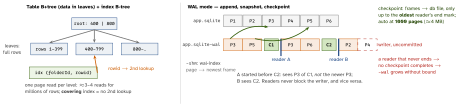

ios-platform · folio
In one line: SQLite is a library, not a server: one file of fixed-size pages
(4096 B default) holding B-trees — one per table (rows by rowid) and one per index.
Many connections may read, only one may write. In WAL mode commits are
appended to -wal, readers keep a snapshot (end mark), and a checkpoint
copies pages back. Core Data, SwiftData, GRDB and Android Room all sit on it.
Download PDF Print view LaTeX source


How it works
- Pages: 512–65 536 B, 4096 default (since 3.12.0). A table is a B+tree keyed by the 64-bit
rowid(INTEGER PRIMARY KEYaliases it) — data only in leaves. An index is a B-tree of (columns, rowid);WITHOUT ROWIDtables are index B-trees. - Rollback journal (
DELETE, the default): original pages copied to-journal, the db written in place; commit = delete the journal. A writer committing locks readers out. - WAL (
PRAGMA journal_mode=WAL, persistent): commit = append a commit frame to-wal. Readers use-shm(shared memory) — so same host only, no network file systems. Big win for apps: UI reads never wait for a background import. - Transactions:
BEGIN= DEFERRED — no lock until first access; a read that later writes must upgrade, and fails withSQLITE_BUSYif another connection wrote meanwhile.BEGIN IMMEDIATEtakes the write lock up front (=EXCLUSIVEin WAL). A read transaction is a snapshot: it never sees later commits. SQLITE_BUSY= another connection holds the lock (busy timeout = wait and retry). No timeout set → fails at once. The real fix: one writer in the whole app.- Durability: WAL +
synchronous=NORMAL(recommended) syncs only at checkpoint — a commit may be lost on power loss, never corrupted.FULLsyncs every commit. - Off by default:
PRAGMA foreign_keys(per connection). GRDB turns it on.
GRDB — one writer, many readers
- One
DatabaseQueueorDatabasePoolper file, for the app’s lifetime. Queue = one connection, everything serialised. Pool = WAL, a serial writer + concurrent readers, each read isolated. - Every
write {}andread {}is a transaction; writes are serialised (so noSQLITE_BUSYinside one process); no writes insideread; non-reentrant. Escape hatches are named…WithoutTransaction/unsafe…. ValueObservation.tracking { db in … }: records the region it read; any commit touching it → re-fetch. Only committed changes; may coalesce;removeDuplicates();.values(in:)async sequence orstart(in:onError:onChange:).DatabaseMigrator: named migrations, each in its own transaction, applied list stored in the db; FK checks deferred to commit. Never edit a shipped migration.eraseDatabaseOnSchemaChangeis for development only.
Example — pool, migration, write, observe
var cfg = Configuration()
cfg.busyMode = .timeout(5) // app-group peers: wait, don't fail
let db = try DatabasePool(path: url.path, configuration: cfg)
var m = DatabaseMigrator()
m.registerMigration("v1") { db in
try db.create(table: "note") { t in
t.autoIncrementedPrimaryKey("id")
t.column("folderId", .integer).notNull()
t.column("title", .text).notNull()
t.column("updatedAt", .datetime).notNull() }
try db.execute(sql: """
CREATE INDEX idx_note_folder ON note(folderId, updatedAt, title)""") }
try m.migrate(db) // each migration = one transaction
try await db.write { db in try Note(folderId: 1, title: "Hi").insert(db) }
let obs = ValueObservation.tracking { db in // region: note table
try Note.filter(Column("folderId") == 1).fetchAll(db) }
for try await notes in obs.values(in: db) { render(notes) }- Tests:
DatabaseQueue()with no path = in-memory db — run the real migrator on it, plus golden db files written by old app versions.
Query plans, indexes, N+1
EXPLAIN QUERY PLAN SELECT title FROM note
WHERE folderId = ? ORDER BY updatedAt;
-- no index: SCAN note + USE TEMP B-TREE FOR ORDER BY
-- (folderId): SEARCH note USING INDEX ... (folderId=?)
-- + USE TEMP B-TREE FOR ORDER BY
-- (folderId, updatedAt, title):
-- SEARCH note USING COVERING INDEX idx_note_folder (folderId=?)- SCAN = every row; SEARCH = B-tree seek; COVERING = no table lookup. Order: equality columns first, then the
ORDER BY/range one.TEMP B-TREE= a sort you could index away. Every index costs each write. - N+1: 1 query for folders + 1 per folder. Fix:
JOIN,IN (…), or GRDBincluding(all:)(one query per association, not per row). - FTS5:
USING fts5(title, body)+MATCH+ORDER BY rank(bm25); GRDBFTS5()+synchronize(withTable:). NeedsSQLITE_ENABLE_FTS5(GRDB docs: custom build).LIKE '%x%'is a scan.
On iOS — files, locks, backups
- Three files: db +
-wal+-shm. Copy, move, back up or protect only the db → lost commits. Put them in one directory and treat it as a unit. - Data Protection: default Class C (
…UntilFirstUserAuthentication)..complete(A): key gone ≈10 s after lock → background writes fail (disk I/O error). 0xdead10cc: suspended holding a file lock in a shared container (app group) → killed. GRDB:observesSuspensionNotifications+Database.suspendNotification.- Backup live: backup API (GRDB
backup(to:)) orVACUUM INTO 'copy.sqlite'(consistent, compacted). Nevercpmid-transaction. - Migrations without a library:
PRAGMA user_version(int at header offset 60) — read, run steps above it in one transaction, write it back. - Core Data SQLite stores default to WAL since iOS 7; SwiftData is Core Data underneath. Android: Room = SQLite + compile-time-checked DAOs,
Flowobservation.
Traps
- Two pools on one file — two writers,
SQLITE_BUSY, observations miss commits. - Long read transaction (a paused cursor, a huge export) → checkpoint starvation,
-walof gigabytes, slower reads. - Read-then-write in a DEFERRED transaction →
SQLITE_BUSYat the upgrade; write transactions from the start (GRDBwrite). - “Add an index” without
EXPLAIN QUERY PLANbefore and after. - Deleting or overwriting the db but not its
-wal, or unlinking a file still open — a mispaired log is a documented corruption path. So is linking two SQLite copies (system + a bundled one): one’sclose()can drop the other’s POSIX locks.
Remember
Pages → B-trees → one writer. WAL: append, snapshot, checkpoint — and the oldest reader decides when the log can shrink.